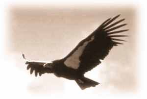
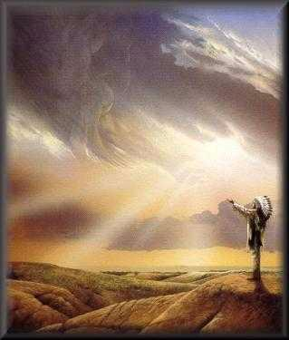

- Instituto de Pesquisas
Psíquicas Imagick
O Ovo do Condor
|  |
por: Julio Cesar Guerrero
Olá....
Conta-se que vivia em alto ponto nos Andes um condor fêmea.
Por razões que existem para justificar essa história essa condor estava chocando onze ovos.
Sim, onze ovos no mesmo ninho, nas alturas colocado, sob a grande condor protegidos dos ventos gelados.
Do nada que eram, possibilidades erráticas, começaram os ovos a se tornar sementes, potenciais seres, os genes misturados, vindos de sua longa estrada traziam consigo o aprendizado de tantas combinações.
Num certo momento os ovos começaram a ter um contato telepático entre si.
E passaram a conversar.
Sobre o que conversavam?
Ora, falavam sobre coisas de ovos, sobre suas fantasias de estar vivendo, da "realidade" que acreditavam viver.
Com o passar do tempo os ovos notaram que um estado de limitação, de opressão se estabelecia entre eles.
Sentiam um certo desconforto e parecia que o desconforto aumentava com o passar do tempo.
Algo os limitava, algo os prendia, mas não sabiam o que.
Não percebiam que estando se desenvolvendo, era natural que a casca os fizesse sentirem-se presos.
Então um entre eles resolveu ser o messias, o que sabia da realidade final das coisas.
- Irmãos, - pregava ele -, tive uma revelação. Descobri a causa de nosso desconforto, de nossa crescente ansiedade.
Silêncio! Aquilo era importante.
- O vitelo irmãos (o alimento que o pássaro vai comendo enquanto está no ovo) é o vitelo que aumenta nossa tristeza, nossa sensação de desconforto.
- Sentimos desconforto porque estamos nos tornando mais materiais, mais pesados, temos que nos espiritualizar irmãos, só se nos espiritualizarmos vamos reencontrar a felicidade e leveza perdidas.
Ora, isso era fato, um pássaro no ovo comendo vitelo vai ficando mais pronto e é claro que sente mais os limites do ovo.
Mas não sabiam desse fato e a "revelação" do pregador parecia ter total sentido.
Aí criaram o movimento fundamentalista :
"Só comemos vitelo suficiente para não
morrer" .
A nova moda era espiritualizar-se para recuperar o estado anterior de maior leveza e dissolução .
Como o crescimento acabou mais lento acreditavam que o
pregador lhes revelara sublime verdade e logo declararam:
- Alimentar-se é pecado!
- Ficar mais denso é pecado!
Crendo nisso viveram por um tempo numa languides, numa indolência, desnutrida existência, onde a pasmaceira resultante era tida por paz ..
Mas um dos ovos, sempre tem esse um, revoltou-se contra aquilo.
- Ora, pensava, se sempre me alimentei por que vou deixar de fazer isso agora, me sinto fraco, frágil, vou é comer.
E voltou a comer .
E comendo plenamento sentiu que estava oprimido, é verdade, sentiu limites, mas não deixou se angustiar por isso e descobriu que sentir os limites de sua condição não era necessariamente associado a angústia e a exasperação.
Era um condicionamento responder assim.
Foi logicamente excomungado da comunidade, mal exemplo a ser negado.
Ovos não conhecem cores, senão teriam dito que ele era um mago negro!
Aí se ovos tivessem listas de debates iam debater se magia negra é aquela que manda comer o vitelo e magia branca é o que, em beneficio da espiritualização, manda deixar de comer.
O fato é que ele continuou a se desenvolver enquanto os outros estavam estacionados.
Certo dia foram todos, telepaticamente, pregar para o rebelde.
Reparem que no estado de ovos eles não fazem nada, apenas imaginam que fazem.
Como ovos não há agir, só fantasia de agir, por isso podem se dedicar as doutrinas mais estapafúrdias e sem nexo e ainda as sustentar por uma vida.
E lá iam pregar, mudar o diferente, o perigoso, o que com seus atos negava o senso comum.
E quem nega com atos é sempre mais perigoso que quem nega em teoria.
Converte-lo, salvar sua alma.
O rebelde foi perdendo a paciência com aquela conversa lamurienta, pois sem comer eles não conseguiam mais pensar e ficavam repetindo a mesma frase alegando ter sido revelada pelo grande deus "Ovão".
Não era um diálogo, era um monólogo repetitivo de frases decoradas contra a argumentação do rebelde, com suas habilidades plenas por estar bem alimentado.
O rebelde num movimento brusco, com sua parte mais densa (o bico) quebrou a casca do ovo.
Para quem viveu no interior escuro do ovo a luz do dia entrando era trevas e no susto desapareceu do contato telepático com seus irmãos.
Terror, o pregador, aproveitador como todo bom pregador
já pregou:
- Estão vendo o que acontece a quem desobece os
sagrados mandamentos? Vamos rezar ao Ovão irmãos pela alma
desse pecador que se perdeu.
Para eles o rebelde havia morrido.
Mas para o mundo aqui fora, para a condor mãe o primeiro dos ovos vingara e ele nascera.
Tudo era novo.
A principio sentiu terror, depois extâse.
E quando contemplou aqueles olhos enormes, aquele ser poderoso novo medo.
Quem seria?
O diabo a castigá-lo? Deus a puni-lo por ter contrariado o pregador e se alimentado?
Com os dias o medo deu lugar ao assombro e este ao fascínio de estar vivo.
Nem deus nem demônio, só sua mãe.
O azul do céu, o sol, os picos nevados, a Mãe Condor que agora lhe dava alimento. Dormia muito ainda, pouco notava das saídas e volta da mãe.
Noite, estrelas, lua, estava extasiado.
Então se lembrou!
Seus irmãos, suas irmãs naquele estado limitado dentro dos ovos, crendo no pregador.
Agora ele sabia que era parte do crescimento sentir desconforto, sentir limites.
Fugir disso era fugir do sair do ovo. Do vir para este mundo, este sim real.
Contou a sua mãe que queria encontrar um meio de falar com seus irmãos e explicar o que descobrira.
Ela riu.
- Mesmo que pudesse meu filho, como falaria de céu azul? De vento?
Como falaria dos picos nevados? Quer mesmo ajudar, então te aninha quando fores dormir aqui, junto aos ovos e transmite teu calor, assim podes ajudar que choquem mais rápido.
Mesmo lentamente, um a um os ovos foram sendo chocados e nasciam.
Ao final de algum tempo todos nasceram, quer dizer quase todos.
O pregador não nasceu, espiritualizou-se tanto
que gorou...
|  |
Nuvem que Passa
|
 Volta
para
Índice da Tribo
Volta
para
Índice Themas Mágickos
Volta
para
Índice da Tribo
Volta
para
Índice Themas Mágickos
Instituto de Pesquisas Psíquicas Imagick
tel: 0xx.11.3813.4123